ISP 影像介紹及影像處理(一)
此篇文章主要是想要介紹ISP基本介紹與處理影像的功能。

ISP function(Image Signal Processor(ISP))
(Image Signal Processing) : 為影像訊號處理。主要用來對前端圖像感測器輸出信號處理的元件，依照不同廠商的image sensor 進行影像演算處理。
ISP 通過一系列數位影像處理演算法完成對數位圖像的效果處理。主要包括3A(AE ,AWB,AF)、壞點校正(BPC)、去噪(De-noise)、強光抑制(HLC)、背光補償(BLC)、色彩增強(CCM , Saturation)、鏡頭陰影校正(LSC)等處理。ISP 包括邏輯部分以及運行在其上的firmware。
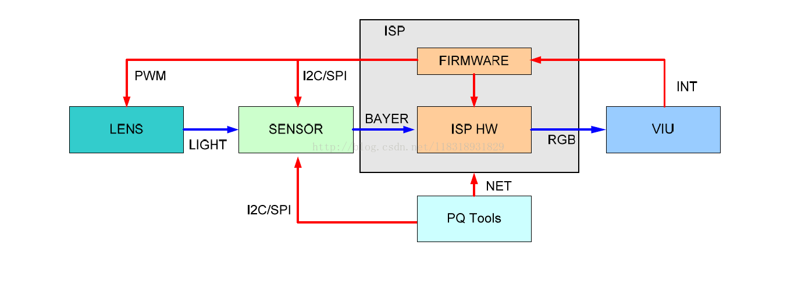
目前ISP類型分類：
1. 相機自帶ISP ：
高畫素相機設備廠商為了更好的配合後端壓縮、功能開發，自行研發ISP處理演算，將算法集成至FPGA或DSP晶片中，連接前端sensor。
2. 第三方研發 (Backend IC)：
IC廠商推出的ISP解決方案直接出售不同的ISP IC給相機客戶搭配各種廠牌的sensor。
3. Sensor自帶ISP：
由廠商自主開發結合sensor解決方案推向客戶，其中的影像處理算法及各種調試工作已經完成，相機廠商只需要做接口對接合併後端壓縮或轉換成數字訊號(HD-SDI)即可。
ISP function(pipeline)：
- 壞點分類：
- 1. hot pixel: 固定保持較高的圖元值，一般呈現為畫面高亮的點；
- 2. dead pixel: 固定保持較低的圖元值，一般在畫面中呈現為暗點；
- 3. noise pixel：信號強度隨光照呈現的變化規律不符合正常的變化規律；
- 矯正方法：
- 1. 靜態矯正：通常由sensor廠商在生產後進行標定，把所有壞點的座標位置記錄下來，然後矯正的時候直接通過查表得方式找到壞點進行矯正。(此種方法無法適應因長期使用造成的後期瑕疵情況)：
- 2. 動態矯正：就是在ISP演算法中通過特殊得演算法判斷一個點是否為壞點，如果是壞點就行行矯正，否則原樣輸出；目前也可以透過 2DNR 的演算法來進行動態校正.。
- 2D 濾鏡可減少低光影像中的雜訊。這種類型的濾鏡有時會被運動所混淆，從而導致模糊痕跡。
- 3D 濾鏡更進一步，可以有效降低靜態影像和運動影像中的雜訊。
- 色溫統計： 根據圖像統計出色溫。
- 計算通道增益： 計算出R 和B 通道的增益。
- 進行偏色的矯正： 根據給出的增益， 算出偏色圖像的矯正。
- 光圈：控制進光量光圈越大，進光量越大，景深越小，背景越容易虛化, 光圈越小，進光量越小，景深越大，背景越不容易虛化。
- 快門：控制曝光時間曝光時間越長，畫面越亮，但是移動物體的拖影越明顯曝光時間越短，畫面越暗，移動物體的拖影越不明顯。
- 感光度ISO/增益：底片對光的敏感程度感光度越大，畫面越亮，噪點越明顯感光度越小，畫面越暗，畫面越細膩。
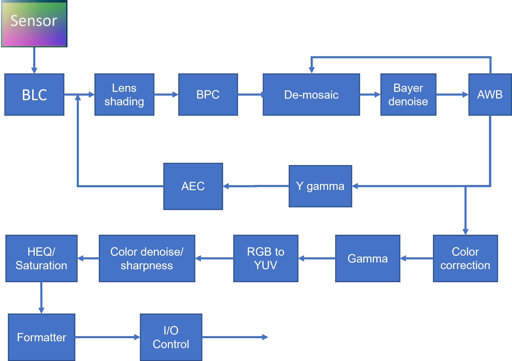
ISP function(Contents)
Contents
| 項次 | 名稱 | 前往內容 |
|---|---|---|
| 1. | Black level Correction(BLC) ➞ 黑電平校正。 | 😀 |
| 2. | Lens Shading Correction(LSC) ➞ 鏡頭陰影校正。 | 😀 |
| 3. | Defective Pixel Correction(DPC) ➞ 缺陷壞點校正。 | 😀 |
| 4. | De-Mosaic ➞ 去馬賽克。 | 😀 |
| 5. | DNR (Digital Noise Reduction) ➞ 數位降噪。 | 😀 |
| 6. | Auto White Balance (AWB) ➞ 自動白平衡。 | 😀 |
| 7. | Auto Exposure (AE) ➞ 自動曝光。 | 😀 |
| 8. | High Dynamic Range(HDR) ➞ 高動態範圍。 | 😀 |
| 9. | Color Correction(CC) ➞ 顏色校正矩陣。 | 😀 |
| 9. | Gamma ➞ 亮度/色彩 曲線。 | 😀 |
| 9. | Sharpness ➞ 銳利度。 | 😀 |
| 9. | SHV ➞ 色彩空間 。 | 😀 |
| 13. | Lens Distortion Correction(LDC) ➞ 鏡頭變形校正 | 😀 |
ISP 調整項目功能說明：
Black Level Correction(BLC)
黑電平(Black Level Correction)為全黑場景下，sensor 仍會輸出的亮度值。需要扣除此亮度值以進行後續的影像處理。在不同應用場景下，線性模式或HDR 模式，黑電平可能需要在不同的地方做處理。使用者只須設定所需的黑電平，ISP 會自動依不同應用場景在特定位置扣除黑電平。
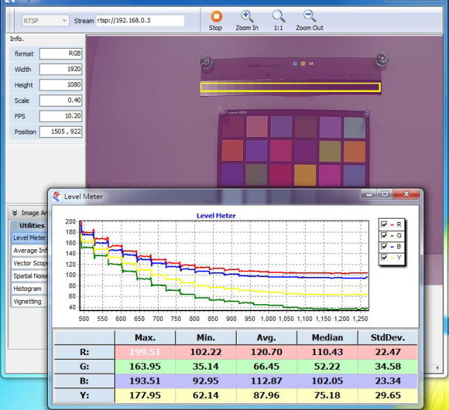
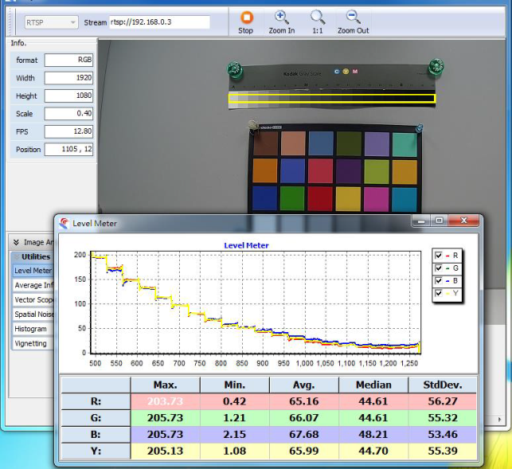
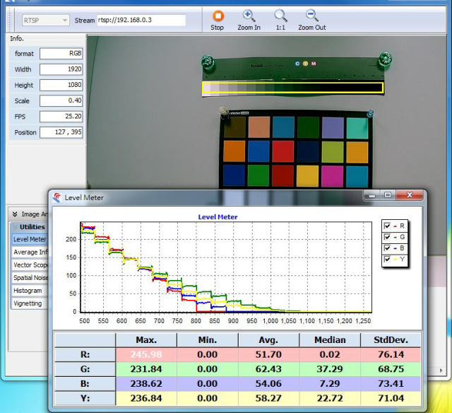
sensor的電路本身會存在暗電流，導致在沒有光線照射的時候，圖元單位也有一定的輸出電壓，暗電流這個東西跟曝光時間和gain都有關係，不同的位置也是不一樣的。因此在gain增大的時候，電路的增益增大，暗電流也會增強，因此很多ISP會選擇在不同gain下減去不同的黑電平的值。
IQ tool 調整介面(依不同平台,或有不同調整介面), 調整工具的 r gr gb b 的扣除值, 將顏色數值盡量讓影像 Avg R = G =B, 趨近於零, 表示校正完成 .
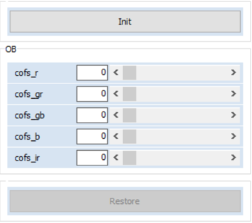
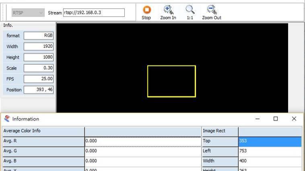
Lens shading correction(LSC)
由於 lens 的光學特性，鏡頭對於光學折射不均勻導致的鏡頭周圍出現陰影的情況。shading可以細分為 luma shading 和 color shading，鏡頭陰影校正（Lens Shading Correction）是為了解決由於 lens 的光學特性。
1. luma shading：
由於 Lens 的光學特性，Sensor 影像區的邊緣區域接收的光強比中心小，所造成的中心和四角亮度不一致的現象。鏡頭本身就是一個凸透鏡，由於凸透鏡原理，中心的感光必然比周邊多。表現為四周的亮度相對於中心的亮度偏低,如圖所示
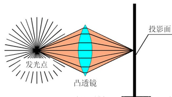
2. color shading：
由於各種顏色的波長不同，經過了透鏡的折射，折射的角度也不一樣，因此會造成 color shading 的現象，表現為四周和中心顏色有偏差的問題,這也是為什麼太陽光經過三棱鏡可以呈現彩虹的效果。

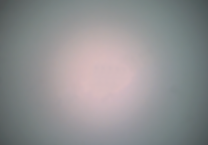
根據攝像頭鏡頭大小和品質的不同，圖像中心看起來通常要比邊角區域亮。鏡頭陰影校正(LSC) 會校正亮度衰減和色差（色彩陰影不均勻）。
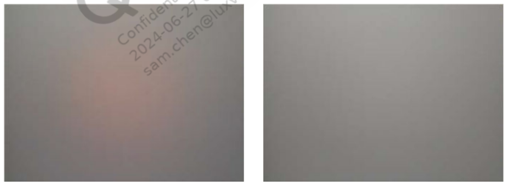
鏡頭是決定 Lens Shading 嚴重度主要關鍵元件，在鏡頭的選擇上，與image sensor 匹配有幾個關鍵數據。
1. CRA(Chief Ray Angle)主光線角 ：
我們在挑選Lens的時候會有一個CRA的參數，在選擇sensor的時候同樣有一個CRA的參數，一般我們要求Lens的CRA曲線與sensor的CRA曲線完全匹配，如果實在不能匹配，我們也要求在同樣的像高位置，CRA相差不能超過3度，而且最好是Lens的CRA比sensor的CRA小。否則將會導致成像照度或色彩問題。
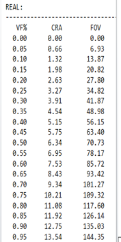
TRC-2125A6-04 鏡頭 CRA 參數
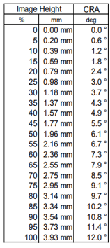
Sony IMX577 Image sensor CRA 參數
2. Sensor diagonal size(mm) :
在正常情況下,Lens 的 image circle 要大於 sensor 的對角長度 , 如果鏡頭的image circle 小於sensor 則會出現遮角的情況,這就無法使用 LSC 來校正,因為遮住的部分沒有影像色彩資訊。
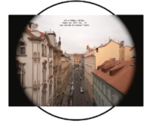
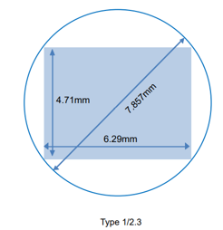
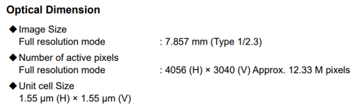
Sony IMX577 Image sensor image size 參數
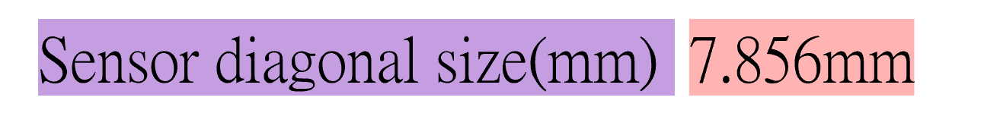
TRC-2125A6-04 鏡頭 image circle 參數
3. Relative illumination (%) :
物體或被照面上被光源照射所呈現的光亮程度稱為照度。相對照度則是中心照度與週邊照度的比值。
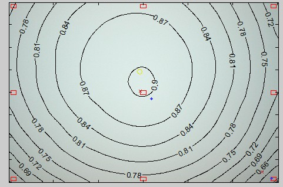
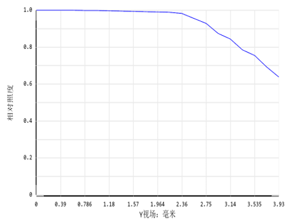
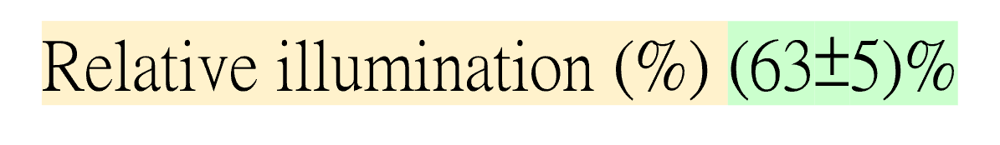
TRC-2125A6-04 鏡頭 Relative illumination參數






3. Relative illumination (%) :
物體或被照面上被光源照射所呈現的光亮程度稱為照度。相對照度則是中心照度與週邊照度的比值。



TRC-2125A6-04 鏡頭 Relative illumination參數



Bad Pixel Correction(BPC)
靜態和動態壞點去除；壞點校正（Bad Pixel Correction，簡稱BPC）是一種常用的影像處理技術，用於修復圖像中存在的壞點或損壞圖元。 壞點通常是由於感測器故障、雜訊干擾或損壞等因素導致的。
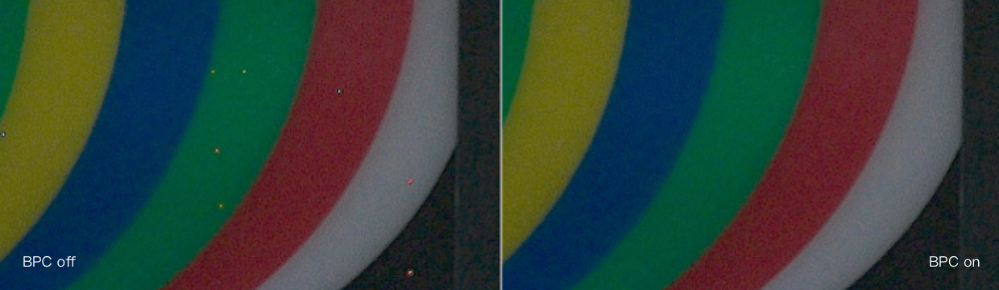
壞點為死點，也就是基本不隨照度變化呈現光電線性轉換的關係。表現為暗態常亮，亮態常暗。
De-mosaic
去馬賽克是一種數位影像處理演算法，目的是從覆有濾色陣列的感光元件所輸出的不完全色彩取樣中，重建出全彩影像。此法也稱為濾色陣列內插法或色彩重建法。 大多數現代數位相機使用單個覆上濾色陣列的感光元件來取得影像，所以去馬賽克是影像處理管線中一個必要環節，以將影像重建成一般可瀏覽的格式。
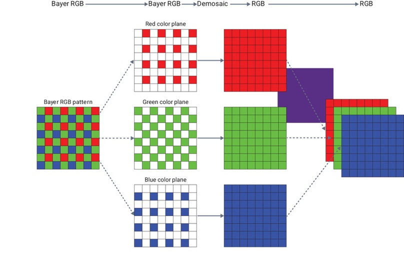
數位彩色圖像的每個圖元點通常都由三種顏色樣本組成，即紅色 (R)、綠色 (G) 和藍色 (B)。但是，在RGB sensor中如果為每個圖元點分別分別使用三個顏色感測器來測量 R、G 和 B 顏色值，成本將非常高。因此，大部分RGB sensor都使用單晶片圖像感測器，圖像感測器中的每個圖元都被 R、G 和 B 色彩濾鏡覆蓋，以此捕獲顏色資訊。單晶片圖像感測器中覆蓋圖元的微小色彩濾鏡的馬賽克被稱為色彩濾鏡陣列 (CFA)。最常用的 CFA 是由 2x2 的馬賽克塊構成的Bayer 馬賽克，每個馬賽克塊都包含兩個綠色濾鏡、一個藍色濾鏡和一個紅色濾鏡。
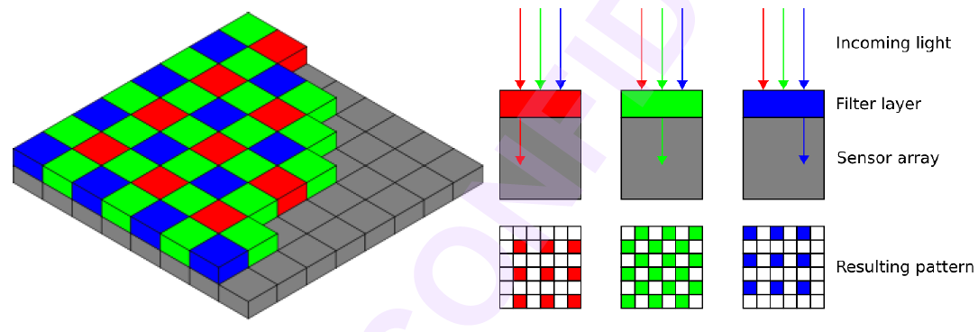
去馬賽克有不同的實現方法。一些簡單的方式是對相鄰同色的像素數值進行內插。舉例來說，當晶片曝光得到一張影像後，每個像素就可以讀取出來。綠色過濾器的像素精確測量了綠色成分，而該像素紅色和藍色的成分則是從鄰區取得。一個綠色像素的紅色數值可由相鄰兩個紅色像素內插計算出來；同樣的，內插相鄰兩個藍色像素也能計算出藍色數值。這種簡單的方法在顏色恆定或均勻變化時表現良好，但在顏色和亮度突變處卻會產生雜訊，比如滲色（Color bleeding），在銳利的邊角處特別明顯。因此，其它去馬賽克的方法嘗試辨認高對比的邊緣，然後僅僅順著這些邊緣做內插，而不越過邊緣。
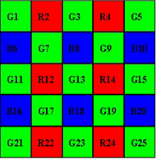
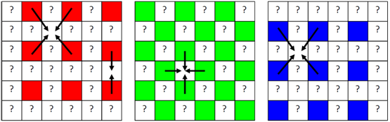
Color Filter Array(CFA)
(Color Filter Array)色彩濾波矩陣,模塊主要是將輸入的Bayer 像素轉換成RGB 像素。原先每個像素只有R，G，B 其中一種數值，轉換完成後每個像素皆有R，G，B 三種數值。藉由調整邊緣內插閾值，可獲得較高分辨率的圖像，同時避免平坦區的雜訊。在轉換過程中邊緣可能產生的偽色，會在此模塊一併處理。
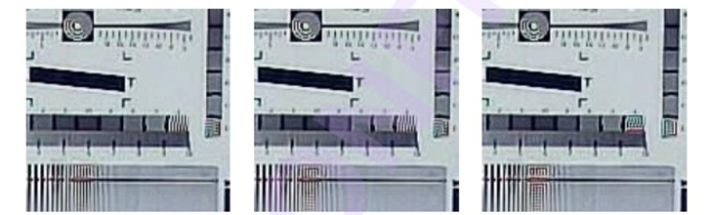
由於de-mosaic時未考慮方向或方向判斷錯誤導致錯誤的顏色產生，容易發生在畫面高頻區域或edge邊緣。
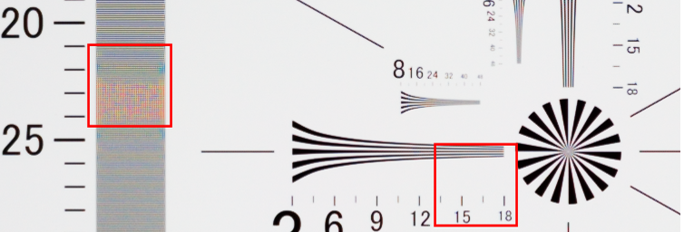
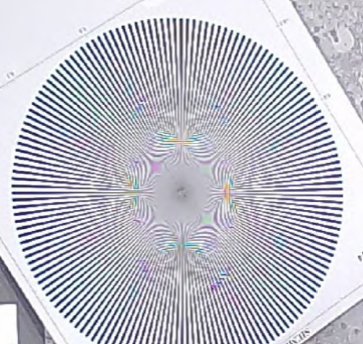
Digital Noise Reduction(DNR)
DNR (Digital Noise Reduction)：影像雜訊是視訊訊號中的干擾，表現為顆粒狀斑點。它可能是由低照明情況、附近的電源幹擾、熱量或設備演算法引起的。
DNR是一種透過應用數位梳狀濾波器從視訊訊號中消除影像雜訊的技術。它使圖像更清晰並減小視訊檔案大小。
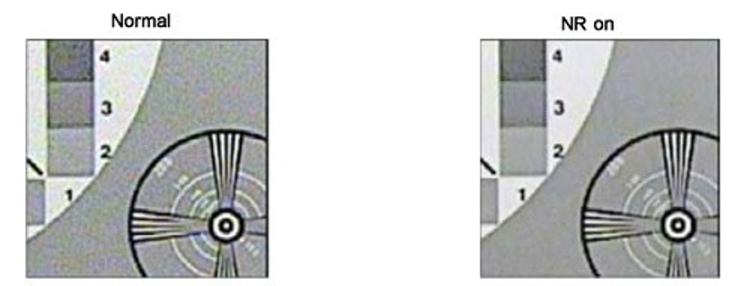
2D-DNR降噪是基於對各個視訊幀的分析
| 2D-DNR |
|---|
| 2D-DNR 它是“空域降噪”，是對單幀進行計算,空域降噪是為保留細節在整個圖像上進行降噪。是針對空間的，也就是只針對當前這一幀畫面進行降噪，當下一幀畫面播放時，再對下一幀進行降噪，不考慮噪點在時間上的關係。這樣的話，即使每一幀都降噪了，但是降噪後的畫面連續播放時還是可能會發生噪點抖動。 |
空域降噪（Spatial）是一種2D降噪方法，它只處理一幀圖像內部的雜訊。降噪演算法根據實現原理不同可以分成很多種類型，比如線性/非線性、空域/頻域，頻域又包括小波變換、傅立葉轉換或其他轉換。
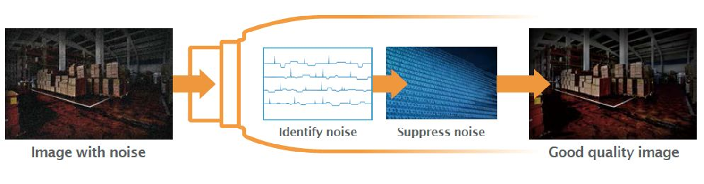
3D-DNR降噪還分析後續視訊幀之間的差異，以適應像素並提高影像保真度。 3D-DNR 技術可提供更好的降噪效果，但它往往會使移動物體變得模糊。
| 3D-DNR |
|---|
| 3D-DNR 它是”時域降噪”,是結合前後幀或以上來進行計算處理降噪,時域降噪技術可以有效地去除視頻中的雜訊，同時保留視頻的主要動態資訊。但是拍攝劇烈運動的影像時域降噪可能會在畫面中出現前一幀或後一幀運動的殘留。 |
3D DNR通過對比相鄰的幾幀圖像，將不重疊的資訊（雜訊）自動過濾，使得圖像噪點明顯減少，輸出的紅外圖像會更純淨細膩。 通過色彩明亮的偽彩色帶將紅外圖像中需要關注的溫度區間或者Y16區間突顯標識出來便於使用者分析處理。
時域降噪（Temporal）是一種3D降噪方法，它的主要思想是利用多幀圖像在時間上的相關性實現降噪。
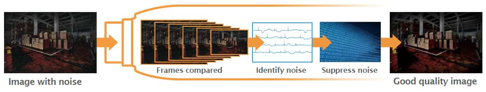
Auto White balance(AWB)
為了將拍攝場景中的白色物體在顯示時正確還原為白色，首先需要知道真實的白色物體在sensor RGB 空間中呈現什麼顏色。常用的方法是通過實驗標定標準白色在一些典型色溫下呈現的sensor RGB 顏色，然後通過幾個標定的色溫點可以外推白色在所有可能色溫下呈現的顏色，從而建立場景色溫與sensor RGB 白色的對應關係，這個對應關係通常用白平衡增益來描述。
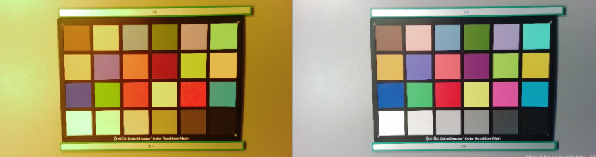
色彩是通過光傳遞和表現的，當陽光穿越三棱鏡會產生一條如彩虹般的色帶，物理學上稱為色譜；這個色譜顏色以此為紅、橙、黃、綠、青、藍、紫，波長在400~700納米，人類眼睛只對這一小段光波具有反應，因此稱為可見光譜。顏色本質上是人眼對電磁波可見光波段特徵的辨識。
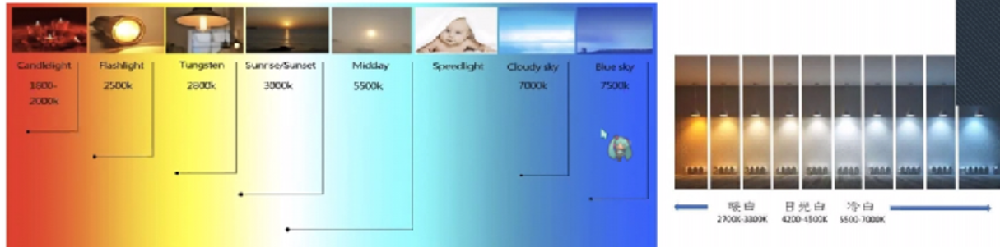
自動白平衡的基本原理是在任意環境下， 把白色物體還原成白色物體， 也就是通過找到圖像中的白塊， 然後調整R/G/B 的比例， 如下關係：
R’= R * R_Gain
G’ = G * G_Gain
B’ = B * B_Gain
AWB 演算法通常包括的步驟如下：
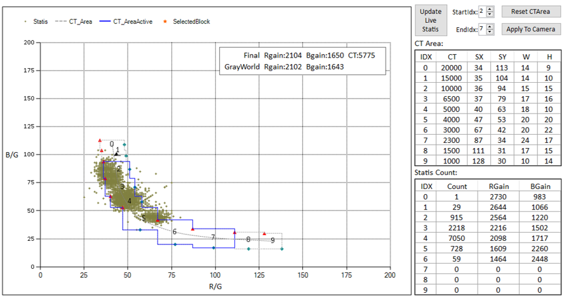
Auto Exposure(AE)
自動曝光的是為了使感光器件獲得合適的曝光量，自動曝光控制了自動調節圖像的亮度。將根據外界的光線自動調整曝光量和增益。但當主體拍攝物和背景的亮度相差很大時，一般會造成主體拍攝物的過曝光或曝光不足，因此也有某些特定的AE演算法著重考慮了主體拍攝物與背景，來克服此問題，在進行亮度調整時給予不同的曝光比重。
自動曝光控制 (AEC) 參數是 3A 標頭檔的組成部分。調試 AEC 參數是攝像頭調試過程的關鍵步驟。如果 AEC 參數正確調試，可優化數位攝像頭感測器陣列的圖像和視頻捕捉性能。AE的目的在於透過收到的統計值將畫面整體亮度控制在一個理想的狀態。

把拍一張完美曝光的照片看成接一桶剛好裝滿的水，那麼光圈就是水龍頭開關的大小，水龍頭開的大，進水就越快；對應拍照就是光圈越大，進光量就越大快門就是開多久的水龍頭，開的越久，水桶中的水也就越多；對應拍照就是快門時間越長，畫面越亮感光度是指過濾網的孔徑，濾網孔徑越大，水桶越快被裝滿，但是會有更多的雜誌混進來，而濾網孔徑越小，水桶裝水越慢，但是進來的水會更清澈；對應拍照就是感光度越大，畫面越亮，噪點越明顯，感光度越小，畫面越暗，畫面越細膩。

Auto Exposure (AE): AEC 控制由 Exposure Time , Exposure Gain IRIS(光圈)， 做為控制，一般ISP 會先控制 Exposure Time (曝光時間) 之後 才會控制Exposure Gain(曝光增益) ， 因為曝光增益增加相對會帶來影像強化出現的雜訊,或是將ExpTime 增加一段時間,再走一小段ExpGain ， 再走一小步ExpTime ， 直到符合設定亮度值為止。
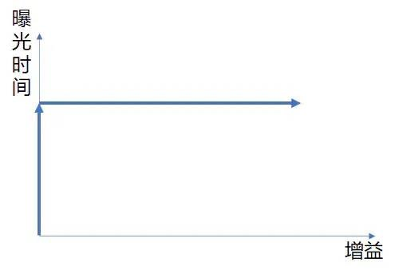
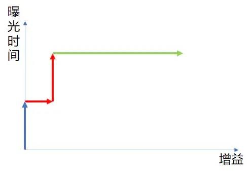
不同的sensor及lens特性及能力皆不同，預設的AE exposure table 不見得適合目前的module，因此需要去檢查，並將其修改為適合目前module的設定。
自動曝光算法會抓取 LA 統計值，並依據使用者設定的期望亮度相關資訊做曝光時間及 sensor/ISP 增益控制。
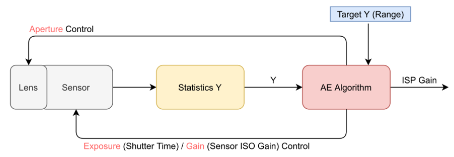
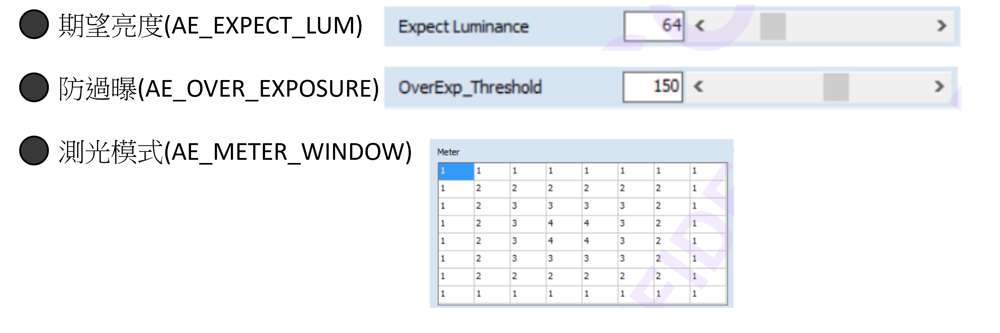
Color correction martix(CCM)
由於人類眼睛可見光的頻譜回應度和影像感測器頻譜回應度之間存在差別，還有透鏡等的影響， 得到的RGB 值顏色會存在偏差， 因此必須對顏色進行校正， 通常的做法是通過一個3x3 的顏色變化矩陣來進行顏色矯正。
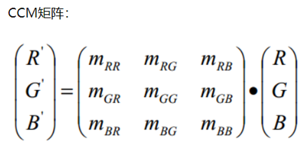
色彩校正矩陣CCM 通常在RGB domain 進行，並且在AWB之後。AWB把白色校正了，相應的其他色彩也跟著有明顯的變化，可以說色彩基本正確了，只是飽和度有點低，色彩略有點偏差。CCM就是要保持白色(灰色)不變，把其他色彩校正到非常精準的地步。
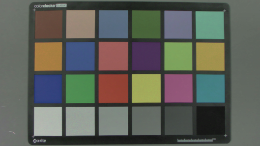
CCM 調整會使用Soc 提供的IQ Tool 進行校正,但是使用工具常常在調整後,依然會有幾個色調會偏移,所以會在一些色溫環境下的CCM 調整矩陣的參數,往哪邊偏就把對應的數值減小，把相鄰的數值加大。
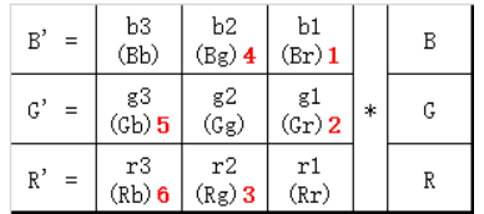
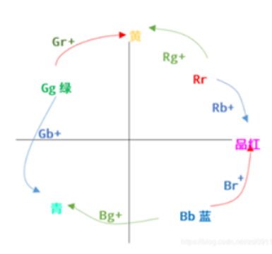
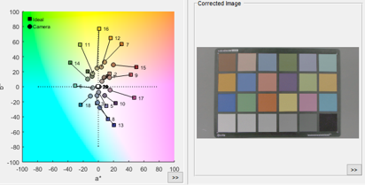